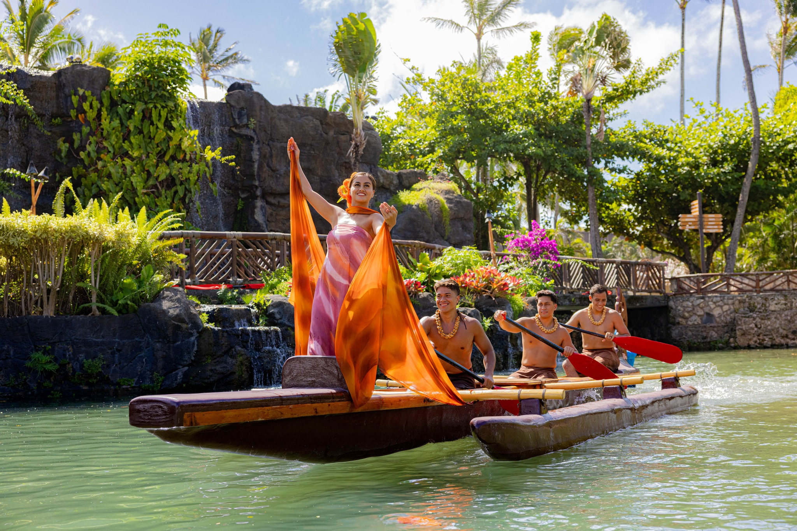

The Canoe: Heart of Polynesian Voyaging
The canoe is one of the most powerful symbols you’ll see at the Polynesian Cultural Center—it’s way more than just a boat. Across Polynesia, canoes were lifelines. They carried families, explorers, and entire cultures across vast oceans, guided by stars, waves, and deep ancestral knowledge. Without canoes, Polynesia as we know it simply wouldn’t exist.

At the Polynesian Cultural Center, the canoe comes to life most vividly in the canoe pageant, where each island culture shares its story on the water. As the canoes glide through the lagoon, they represent migration, survival, and connection to the sea. Every movement, chant, and costume reflects how deeply Polynesian people respect the ocean as both a pathway and a provider.
The canoe also symbolizes unity. Though each island has its own style of canoe, language, and traditions, they are all linked by the same ocean and the same spirit of navigation and resilience. Watching the canoes at the Polynesian Cultural Center is like watching history move—quietly reminding us that Polynesian culture was built on courage, skill, and an unbreakable relationship with the sea